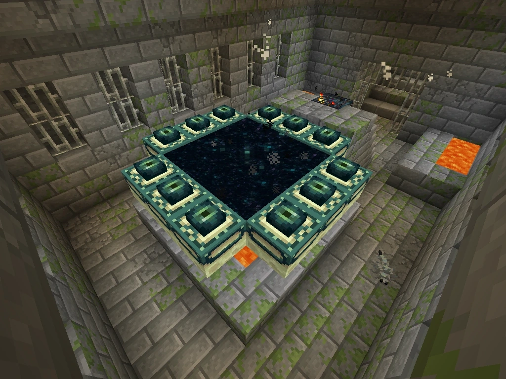
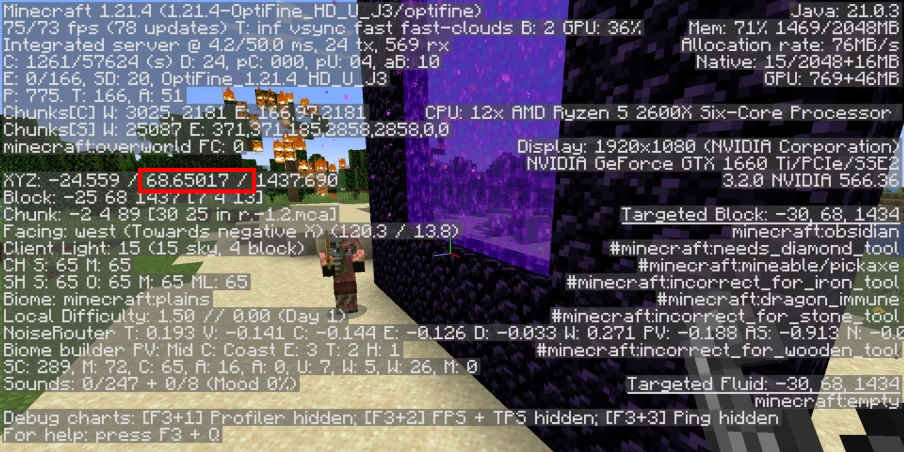
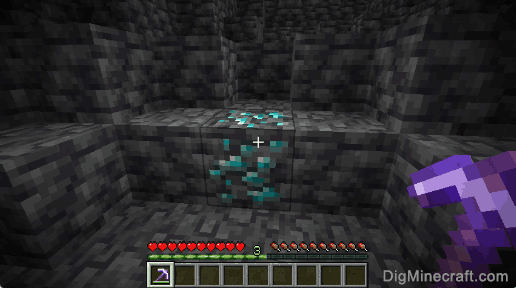
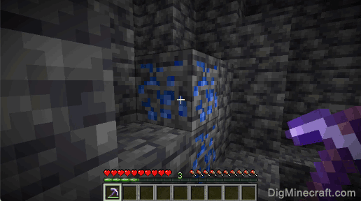
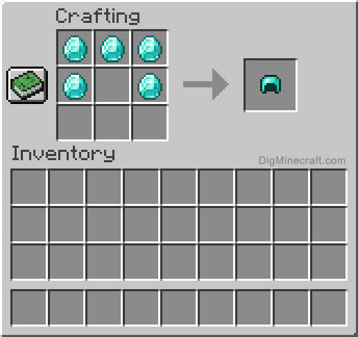
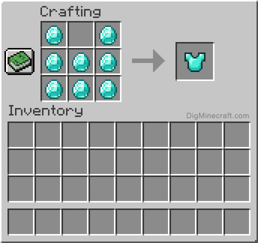
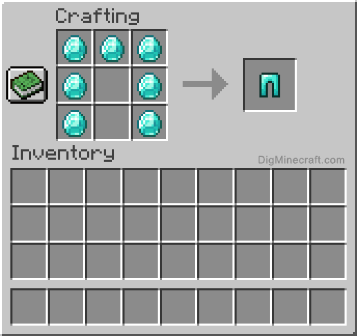
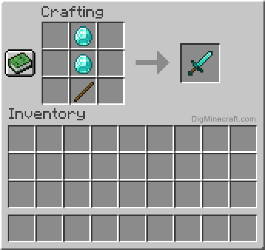
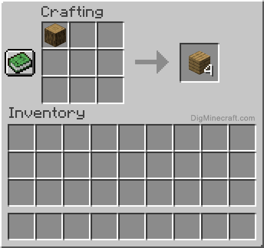

You're on the final stretch now! All that's left is preparing for the battle in the End. There are many more things that can be done when preparing for the End than what will be covered in this section. Some of these things include but aren't limited to: enchantments, potions, bed spamming, etc. For the ease and simplicity of this guide, we will be sticking to the basics. This doesn't mean that you can't still conquer the end just using the basics!
The first thing you're going to want is good armor. Iron armor is a good armor, as it offers good protection. It is also cheaper, easier, and quicker to make than diamond armor. However, it is strongly recommended for that extra protection. On top of that you're going to want a diamond sword, a water bucket, plenty of food, a bow with a lot of arrows, a shield, and a few stacks of blocks of your choice. While some of these things may have been covered in previous sections, we will cover them in case you didn't follow exactly along or you have forgotten.
To get the diamonds for your armor, you're going to need to go mining again. A full set of diamond armor and a sword is 26 diamonds. For all tools minus the hoe, it will be 30 diamonds. You'll need to mine at a Y level of -58 for the best chance of finding diamonds. You can see your Y level in the f3 screen by hitting f3 on your keyboard. The Y level is the middle number in your coordinates as outlined in red the image below.

When mining, try to always mine in the same direction so your mine system doesn't become too confusing from turns. You might end up running into your own tunnel a handful of times if you make turns and then it will be difficult to find your way back! Finding large caves at these low Y levels is another good way to find diamonds, but you won't get as many building resources from this method. This will take a while to find enough diamonds, so while you're down there, you can also get some reserve diamonds if you want them to replace broken tools and armor. The extra diamonds are not necesarry though. Below is an image of what diamond ore looks like. It is a block that has a light blue ore, in which is easily distinguishable from other ores. You should know this from the Preparations for the Nether section. Don't confuse diamonds with lapis lazuli, which is a far darker blue. You cannot craft tools or armor from lapis lazuli. The lapis lazuli block is depicted below the diamond block. Lapis lazuli is good for enchanting. Enchanting is outside of the realm of this guide. While you're mining, grab any iron you see as it's needed for some of the recipes that you'll need.


Once you have your diamonds you will need to craft your armor and your sword. Below are images of all the crafting recipes you'll need for this step. If you don't remember the crafting recipe for sticks, scroll down and refer to the bow section.




While we are making tools, lets make our bow! If you have killed any Spiders, hopefully you saved their string. If you have, you will already have some and you can skip this step. You'll need three string and three sticks to craft a bow. In order to get string, you have to kill Spiders as they drop string when they die. Note that spiders only spawn at night or in dark caves. Just in case you forgot, below is what the Spider mob looks like.

Once you have string, you'll need your sticks. Sticks can be obtained by breaking leaves on a tree, or crafting them. In case you forgot how to craft them, we will go over it again. Firstly you'll need to chop down a tree. It doesn't matter what type of wood it is. It's the same crafting recipe for all of the wood varients. Once you have your wood, you have to turn the wood into planks, either in your inventory crafting table, or a regular crafting table. Then you need to put one plank above the other, and bam! You have your sticks! Refer to the images below if you're confused.


Now that you have your sticks and string, you're ready to make your bow! The crafting recipe for a bow is more complicated than Sothers. You'll need to put a stick in the top and bottom center squares of a crafting table. Then put a stick in the left middle square. Then on the right side put all three of your string in a row. Top right, middle right, and bottm right. Then you'll have your bow!
A bow can be fired as long as you have arrows in your inventory. Arrows do not need to be in your hotbar to be used. To fire a bow, hold down left click with the bow equiped. The longer you hold it, the farther the arrow will travel. If you hold until the bow is fully drawn, that is the farthest that arrows can travel. To tell if the bow is fully drawn, you'll notice that the string on the bow has stopped being pulled back. When a bow fires, it expends one arrow, and takes durability off of the bow. If your arrow doesn't hit a creature or mob, you can pick it back up. You however cannot pick up fired arrows from Skeletons. For the End battle, you're going to want two to three stacks of arrows. Just as a reminder, a stack is sixty four items and takes up one inventory slot. You can always carry more arrows than the recommended amount. The more the better!
Now we will be crafting our arrows. Arrows can be easily obtained in two different ways. The first way is just to kill Skeletons. Skeletons will drop zero to two arrows upon death. This way is easier and more engaging compared to crafting, but can only be done at night, and is far more dangerous than the other method.

The other method is simply to craft the arrows! To craft arrows you'll need one flint, one stick, and one feather. Refer to the bow and arrow section above for obtaining sticks. In order to get flint, you'll need to break gravel. Every time a piece of gravel breaks there is a ten percent chance it drops flint instead of a gravel block. The easiest way to do this is to mine a bunch of gravel. If you're going for four stacks of arrows, mine a stack of gravel. This is because one flint, one stick, and one feather will make four arrows. You'll also want a water bucket or a body of water. If you don't have a water bucket, you can refer to the review section on buckets later in this page, or just find a body of water. Either works! The water is just to protect you from the fall. Place your water bucket down or go near the body of water. Do not be directly in the water but a block or two away from it. If you're using a water bucket, place it on a flat surface for the largest area to land in. Once you're ready, look directly down and jump. At the highest point in your jump, place the gravel block beneath you. The easiest way to do this is to just hold down right click and spacebar while looking directly down. Repeat this until you run out of gravel or hit the height limit. You'll have hit the height limit once your blocks stop placing when you jump. If you're making four stacks of arrows, you should not hit the height limit. Once at the top, jump down into your water to break your fall.

The quickest way to break gravel is with a shovel. The better the shovel the quicker it breaks. For example, a diamond shovel will break the gravel blocks far faster than an iron shovel. Durability of your tools does not change their effectiveness. Just keep breaking the bottom block of the gravel and the gravel above it will fall down! Repeat this until you have all of your flint.
Next, you'll need your feathers. Simply just kill chickens! This is a great way to not only get food for your End battle, but also get all of the feathers you'll need for your arrows!

Below is the crafting recipe for arrows.
Once you have all of your arrows, you're ready to get a water bucket. For this, all you'll need is three iron ingots and a body of water! Remember, iron ingots can be made by putting iron ore into a furnace with anything made of wood, or coal.

Once you have your iron ingots, go to your crafting table. Place an ingot in the center of the crafting table followed by an ingot in the top right, and top left. Now you have your bucket!

Then all you have to do is go to a water source such as a lake, river, or ocean, and right click on the water. Your bucket should then turn blue at the top showing it has water in it! It's recommended to have three water buckets for the End battle, but you can easily get away with just one.

Finally, if you don't have one, craft a shield. You should know how to get the materials for the shield from previous crafting tutorials in this section. If not, refer back to the ingots in the water bucket section, and the wood in the bow section. You need 6 oak planks and an iron ingot. In a crafting table, place the iron ingot in the top middle, then place a plank in the top left and right. In the middle row from left to right, place an oak plank in each spot. Finally, place your last oak plank in the bottom center. If you're confused, refer to the image below.

Now all you need is some food. You should at this point know how to obtain and cook a meat source. It's recommended to bring a stack (sixty-four) of a cooked meat. This can be steak, porkchop, mutton, chicken, etc. This is to make sure you can replenish your hunger bar during your battle in the end so you can regenerate your health.
The final thing, which isn't needed for the fight, but highly recommemended is to bring a bed. This will allow you to sleep on your journey to the portal as well as reset your spawn point at the portal. This is because if you die in the end, you respawn at your spawn point in the Overworld. There is a good chance you'll die during your fight, so you can set your spawn point in the Stronghold with a bed. It's a lot quicker to get back into the fight than to have to find the Stronghold again. As a quick reminder on how to craft a bed, you need to take three wool and place them in a row at the top of your crafting table. Right beneath that, place three planks. The wood type does not matter as long as they're all the same type of wood. The wool color also does not matter as long as they're all the same color of wool.

Now you're ready to start searching for the End portal! The first step to this is to craft your Eyes of Ender. The Eyes of Ender are used to not only find the Stronghold, but activate the portal to the End Dimension. To craft the Eyes of Ender, you'll need to put your Blaze Rods in a crafting table or your inventory crafting table. Each Blaze Rod gives you two Blaze powder. Refer to the image below.

You should then have the same amount of Blaze Powder as Ender Pearls. You can then put them next to each other in a crafting table, or your inventory crafting. This will craft your Eyes of Ender!

You're all set for your travels! Make sure to bring your tools such as a pickaxe, shovel, and torches, and a few stacks of blocks. Travel to an open area. Right click to throw your Eye of Ender in the air. Pay attention to the direction it travels. This is the direction to the nearest Stronghold. Every once in a while throw it again. Do this sparingly though as your Eyes of Ender have a twenty percent chance of shattering. If your eye of ender shatters, you won't be able to get it back. You need up to twelve to open the End portal.

You'll know when you've passed the Stronghold when the eye of ender travels the opposite direction. Turn around and once the eye of ender goes directly down, you've arrived! You'll want to dig directly down, digging out two blocks wide while standing directly in the middle. This is so that if you end up reaching a cave or lava, you won't fall to your death. Using this method, you can always see whats coming up beneath you before you break the block you're standing on!

You'll know you've reached the Stronghold when you see stone brick!

Now all that's left is to find the End portal! The End portal is in a room with lava pools on the edges, lava underneath the portal, and a Silverfish Spawner. The Silverfish Spawner is on the staircase up to the portal. The silverfish Spawner, unlike the Blaze Spawner, is not important. It is recommended to just destroy it immediatly. After destroying the Silverfish Spawner, kill all of the Silverfish. Below is what the End portal room may look like.

There is a ten percent chance a frame in the portal already has an Eye of Ender in it. You can tell this by if the frame has an eye in the dark spot in the center. You can see this in the image above.
Now that you're at the portal, if you have one, place down your bed and click on it as if you're going to sleep. Even if it isn't night time, it will reset your spawn point. If you didn't bring any beds, write down the coordinates of the End portal room so you can get back. Now you're ready to open the portal! Place the Eyes of Ender in the empty frames by right clicking on them while holding the Eyes of Ender. The portal should make a big whoosh and open which will look like the following.

Before jumping in, ensure you have a few stacks of blocks to build with as you may have to bridge over to the island. You will also use your blocks to climb up the towers. Once you're ready...
Jump in because it's time for the ENDGAME!